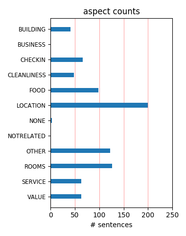
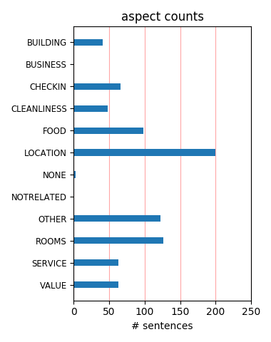

Close to Musee Lourve & Cathedral Notre Dame. RER Station is just 1 min from Hotel. 1 RER (B line) from Europe Star (Nord), same line around 45 min straight to airport. Lots of resturants, fast food shops and supermarkets nearby. Very convenient.
This hotel is close to everything, but the eiffel tower, if you do the subway not to bad. The hotel is in a fun neighborhood with alot going on. The only negative for me was the communication with the hotel staff, very few English speaking staff membrs.
Big rooms, with a double bed and two single beds, helpfull staff! good breakfast, but not included. Metro just behind the hotel, just like a big shopping mall. Good location, near Rue de Rivoli and Louvre, in the 1°arr. I would definetely stay there again!
Fantastic location, within walking distance of Louvre, Notre Dame, Hotel de Ville. If arriving by train do ask the hotel for directions on how to get out of Chatelet Les Halles because there are too many exits! For the centre of Paris I think this is really good value for money
Stayed here with family. You can't beat the location! 5 minutes walk from Louvre, Pompidou centre, st Germaine, etc. and right above the metro station.Service was great and staff attitude was exemplary. You can't go wrong if you stay here. We would definitely choose to stay here again.
Very good 4 stars Hotel (European Standard) located in the heart of Parisian Les Halles (10 meters from subway exit Chatelet/Les Halles). The Hotel is nice, didnt try the breakfast, rooms are ok and comfortable. Would higlhy recommend it for excellent quality/pric ratio and for perfect center of Paris location.
Location is great, few minutes away from Notre Dame, Centre Pompidou, Rue de Rivoli, Louvre, aso. Classic Novotel, good services, nice staff. Breakfast is having good pastry and nice coffee as an example. In the neighborhood plenty of restaurants and cafes where to have a perfect dinner. Good price for Paris, nice quality price ratio.
We stayed on a higher floor and noticed little road noise. Construction of a large are adjacent to the hotel is currently underway but I did not notice any significant noise. My little boy actually enjoyed watching all the construction equipment. Breakfast was very good and overall a good value by Paris standards with a large selection.
The hotel has great location and is near to a lot of sights in Paris. The near surrounding is maybe not the best and a little bit noisy at night, but you find several good places to dine at. The hotel serves a very good breakfast even if the queue can be long. Rooms are good with great bathroom. The children slept well in the extra bed.
1.Staff are polite and helpful. 2, Quality of breafast can be further improved. 3. Location are excellent but it is very difficult for finding the hotel by driving even with two GPS prompting,Novetel signboard are generally too small to identify on the roadside,may be the hotel can provide better roadmap to guide the driving Novotel hotel guest.
This hotel was great. Center of Paris and near metro. Not a far walk to notre dame. Breakfast was ok. Typical European buffet. Staff was great in helping us locate our luggage lost by airline. They all spoke great English. Very clean room and decent size, although we didn't have luggage to occupy our room for most of our stay. Would stay here again.
We stayed here for 3 nights at the end of November '11 with two adults and two children. Nice bar and restaurant area. Kids area with xbox. The rooms were smallish but it still slept four just fine. I wish they had mini humidifiers in the room because it was very dry but other then that everything was great. The location is absolutely perfect and I would stay here again!
This is a nice clean, but not too fancy, Hotel located close to all attractions. My wife and I love to explore by walking and this location is very close to The Louvre, Isle Notre Dame and all other sites. The walk up The Champs Elysee to The Arc De Triumph was a hike but worth it. The Hotel is also close to many restaurants and Bistros which are again within easy walking distance. Generally a nice place to stay.
We were staying in this Hotel on a 1 night break to Paris. The room was clean, modern and a good size. The position of the Hotel was perfect. Even the usually sourly customer service you would generally expect from the French was not in existance. The staff were very helpful and did not even question me when I asked for my mini bar bill to be removed as it had been added by accident (our fault). Highly recommended.
This hotel is in a great location, walking distance to notre damme with the metro and RER on you doorstep you can get the train from the airport to right to the hotel and a direct train to Disney.I found the rooms to be a good size for Paris ,with a fold out sofa bed for my Daughter were was still enough room.Nice foyer area and reception was helpful and polite.Mini bar quite expensive but i would return a good hotel.
They clearly do not understand customer service. Insensitive to customers needs and not the best place to ask for help especially if ur Asian. Not willing to gives change even though it was a bank holiday and I was helpless. Managed to get it only after speaking to the Director of the hotel. Also, the air conditioning was not functioning properly and inspire of repeated calls to the front desk they just did not bother to assist.
We thoroughly enjoyed our stay at this hotel. For me one of its winning features is its practical location right outside Chatelet Les Halles Station. A 30 min RER train ride from Charles de Gaulle Airport will take you directly in front of this hotel. Our room was a corner room and as a result, very spacious, unlike most European hotels. The breakfast was generous but those who desire fresh fruit and juices will be disappointed.
Pros: Centrally located within walking distance of the Louvre and several other sites. Clean, modern look (felt like Vegas). Room was relatively spacious. Easy airport access (via RER B). Con: Our room's heating didn't work and they wouldn't move us. Instead they gave us the reception area's space heater, which worked out well enough for 2 nights, but I kind of felt bad for reception since it reached -8C and snowed during our stay.
If you are going to Paris, this hotel is perfect for location. You can walk to most of the main sightseeing spots such as Lovre, & Notre Dam, & shopping areas. There is an underground satation just outside the door too. The lobby area and bar is quite nice but €12 a pint is a bit much for a novotel bar. There are lots of nice places to reat and get lunch etc very close to this Novotel. If i was going to Paris again i would stay here again
I booked this room based on the photos and the reviews I saw. Sadly, it was far from what I was expecting. The hotel, nice looking on the outside, is quite old and needs refurbishment. The rooms were not comfortable, as the beds were hard, and the blankets harsh. The bathroom was OK. The TV, small. Very small... The lightning in the room, too dimmed. The elevators, really old. I wouldn't go back to this hotel, although the location is SUPERB.
I loved this hotel. The view from my room was so "Parisian". The room was very spacious and clean. The bed was a bit hard but that can be fixed by the beautiful french wine! The breakfast was by far the best I had in Europe. The hotel is a very short walk to the Louvre and a 4.7km walk to the Eiffel Tower. There are plenty of retaurants in the area and shopping in Les Halles in teriffic. Would definately stay here again - I loved this hotel!!!!
I chose this hotel due to its location which is close to the main subway station .There is a small courtyard behind the hotel where there are lots of food outlets and other stores.This gives the area a wonderful charm.The reception was always crowded and the check in took some time.The rooms were average and there is nothing special about the hotel.It seemed that there are other hotels close to this which are better value.It was an OK Experience.
I stayed in this hotel with my family for 4 nights. The location of the hotel is great ! It is within walking distance to Notre Dame, Louvre museum and close to the shopping areas of Galeries La Fayette and the Saint Honore street. The only downside is that in the evenings we heard shouting and loud singing from the outside, making us think that people get drunk in the neighborhood therefore we did not go out around the neighborhood after sunset.
We needed a central location as we were in Paris for just one night as a birthday treat to pick up a certain pair of shoes. Hotel perfectly located for all sites and Metro. Unfortunately room was not up to usual high Novotel standard expected.....safe was broken, toilet seat not fixed and shower door didn't close leading to flooded and slippy floor. Breakfast and bar was great though staff were distracted and stretched by large party of demanding Canadians.
The great virtue of this bustling hotel is that it is in a pedestrianised zone a moment from the Pompidou Centre and with a massive metro interchange beneath ( and also a garage for guests,so rare in Paris ). Our room was immaculate and had a great view of Montmartre. Bathrooms are not big but are decent. No noise penetrated the room. The young man in charge of helping with luggage was a very pleasant whirlwind . I do not rate Novotel breakfasts and would not recommend you pay 18 euros for one. Go out .
I have stayed with my family (wife & 2 kids) in July 2009. It has excellent location with access to most of underground lines just below the hotel, bus station, seine river, Rivoli street of shopping, Latin quarter with many restaurants, also grocery & fruits shop. Diret RAR to EuroDisney. Amazing breakfast collection & variety. Clean room. Big sofa bed for two children. I had an offer with 65Euro per night without breakfast & I added the breakfast. The shower bath is separated compartment from the toilette.
We stayed in Paris for a week. The rooms are okay but there are buisness facilities on hand. Check-in desk is way too over-crowded. Breakfast is very-good. So close to the Louvre, the Sienne River and behind is the biggest metro stop in Paris: Chatelet - Les Halles. I would choose this hotel for people who like a good start to the day and will spend a lot of time sightseeing. DO NOT Choose this hotel if you plan to relax in the room and rest a lot. PS. No Pool but there is two computers downstairs for guest use.
After reading previous reviews on this hotel, I could not disagree more with the negative comments. My husband and I just returned from travelling throughout France and Italy. The hotel has recently been renovated in the last couple of years. All rooms in Paris are smaller in size. The staff were very friendly and the location is great. We had the buffet breakast and didn't have any problems with line-ups or crowding. The staff stored our luggage for us and were very accommodating. We would recommend this hotel.
For a long weekend Paris we chose (2 parents and 2 children) for this hotel. The room on the 6th floor was fine and sufficiently roomy (separate beds for the children). Tip voor Novotel: please change the blankets for quilts. Much more hygienic and in line with the room articles Novotel tries to sell to customers. The location is excellent, right between Quartier Latin, Centre Pompidou and Louvre. Busses and metro right outside the hotel, as well as the Paris community rent bikes. Breakfast was and the lobby roomy.
Novotel was a wonderful rescue from an internet reservation gone wrong. We had reserved a room at Hotel Saint Honore just steps away. That hotel turned out to be horrible. We needed another hotel and fast. Novotel had a room for us thank goodness! Our room was beautiful! It was very new, clean, and modern. They must have been remodeling room. Our room was new! The lobby was beautiful and the staff friendly and helpful. Excellent area and so much to do. Right by Chatlet Metro. I would stay here again in a heartbeat! Wonderful!
Stayed here for 5 nights. Location was perfect as directly outside there was a Metro stop. Although we never used it. The hotel is within walking distance to Notre Dame and the Louvre. We travelled with 2 children and walking distances were not an issue. The room was a good size, comfy bed and very clean. We had the full buffet breakie and it was great. 36 Euro per adult and our kids ate free. The selection was perfect. Cereals, breads, eggs, bacon ,mushrooms,sausages,potatoes,cheeses,pastries,juices etc etc.. Would recommend to anyone.
Stayed for 3nights while sightseeing Paris - room was adequate for our family with a large teenager and 10 year old. Breakfast was plentiful but quite busy so worth getting there early. Good location as you can walk to the Louvre, Pompidou easily. Had an evening meal in restaurant and compared to Paris prices it was quite good value. Surrounding area very busy with shops although a few undesirables hanging around although this seems fairly common thoughtout Paris. Would recommend this hotel for the fact it had a fairly large family room.
Stayed 6 months ago (sorry.. only just around to catching up on TA reviews).. for 2 nights with our 3 year old daughter. Never been to Paris before, so found the location of this Novotel fantastic as could easily walk to central shopping hubs, Louvre (amazing!!), La Seine and other classic tourist icons in Paris. Service in hotel was very good... loved the greeting on arrival with soft toy gift for the little one and hotel has good breakfast, pool etc. Room very clean and modern... fabulous stay overall. Thankyou.. can't wait to return...
Very convenient location: Train from CDG Airport stops right under the hotel. Area around the hotel deteriorated over the last few years, so please be careful walking around. But few blocks away, in a tourist areas, it is safe. Hotel is well secured with 24/7 security and key-blocked elevators. Rooms are ok, but pillow are poliester, and mattress is foam. Service is lousy: It took us 1.5 hours to get a third pillow (!); staff did not speak English; there were no extra toothbrushes in the housekeeping. For the price - $260 - the hotel is a low value.
This is a reasonably priced hotel in a central location. Les Halles isn't the nicest central area, but the hotel is 4 minutes from the Seine and 5 from the Louvre. The rooms are clean, the balcony is good with an opening window, the bed confortable, and the shower was fine. No bath, and the corridor was depressing. There was a mix up with the bill at the end and they only had one cashier on check-out. Overall this hotel is fine but absolutely nothing special. On the basis that Paris is full of characterful hotels I probably wouldn't miss never going back!
I booked this hotel for a 4 day trip with my mother and 16 year old sister. Both had never been to Paris, and as our trip was short I wanted something centralized. We had a standard room with a pull-out bed/couch. It was fine for a group of three. Breakfast was very good and had a nice selection -- also big cups of coffee which my mother appreciated. The beds were not uncomfortable and the staff was helpful. Our room and bathroom was extremely clean. It didn't have the charm of a smaller hotel, and was a bit expensive, but we went for location and convenience.
I stayed at Novotel Les Halles for 5 nights in June a family of 2 adults and 2 children in one room. While the room was small it was clean and the bathroom recently renovated. The location was great next to les Halles Metro and RER station. It is close to many resturants, cafes and bars. There was plently of Police and transit police security at night, they park their vans at the rear of the hotel. Our family felt safe and we have no concern recommending the hotel. To me the rates are expensive, however having the whole family in one room is the best way to minmise costs.
We had a lovely few days here. The price was so good that I was expecting it to be a bit grotty but it was a lovely, clean, modern, welcoming hotel and suited our family very well. The area is undergoing some building work to the Forum Les Halles shopping centre but this didn't disturb us at all and there were so many great restaurants nearby. We thought the breakfast cost was too high but when we went out to get a breakfast locally we realised what excellent value the hotel version was. This was a good spot to access all areas of Paris both walking and by Metro. Impressed.
This was a perfectly located hotel for our family, right in the middle of Paris in the Les Halles, Chatelet area. Check-in was smooth, and the rooms were comfortable. Clean bathrooms, shower and bath-tub. It was a little small for a family with 2 kids, but still comfortable. Public transportation was just below the hotel. Metro, RER and cabs. The Louvre and Pompidou were a 10 minute walk away. There were fantastic cafes, restaurants and McDee's around the hotel. There is a huge mall directly behind the hotel, a mere 50 meters away from the rear entrance An excellent stay. Waiting to go back
Had a comfortable 4 day stay at this hotel. Great central location in Paris. The hotel is built around a large internal courtyard. We had a room overlooking the courtyard, view was nothing great but nice and quiet, even managed to sleep with the window open and enjoy the warm spring Paris air. The pedestrian precincts nearby have a very cosmopolitan mix of restaurants. Notre Dame and the Lourve are both within walking distance, entrance to the Chatelet metro station is right in front of the hotel. Les Halles RER station is behind the hotel and can also be accessed via the Chatelet metro entrances.
We booked the Novotel les Halles primarily because we were coming into Paris from Beauvais on the shuttle bus to Porte Maillot then on the metro to les Halles. It was a great choice! The hotel itself is modern, extremely clean, spacious sound-proofed rooms and has a great bar area. The staff were absolutely fantastic, friendly and helpful. An added bonus was the left luggage room which meant that we could check out (midday) and leave our bags all day until it was time for us to head back to the airport. I would definitely recommend this hotel to anyone wanting to stay in central Paris. We'll be back!
The hotel and staff were very good and always polite and helpful and the hotel well located for shopping and the metro station and shopping center just next door. Generally the food in the dining room was quite good with a good selection, however we paid quite a lot for a lobster 'special' and it was dry and seriously overcooked. The only recompense to us was the comment from the waitress that she would tell the chef and a single scoop of icecream with our desert. This was disappointing when this special cost so much. I would stay here again but be a little more carefull about expensive specials in future.
Ideally placed for touristy city breaks, max 10 min walk to louvre / isle de la cité / centre pompidou etc. Comfortable and pretty smart, but in a chain-like way (it is a Novotel after all...). Very clean and quiet. Walk-up prices are crazy (350 eur) but online pretty good value (max half that), esp with kids as they stay (and eat breakfast) for free, in rooms plenty big enough to sleep 4. Helpful staff. Be sure to exit Chatelet Les Halles at Porte Berger or you'll be wandering around all over trying to find it.... The immediately surrounding area is pretty lively at night, but perfectly safe. (Rooms are quiet.)
We arrived at the Novotel Les Halles at midday but the staff were kind enough to let us check in then even though check-in normally doesn't start until 3pm. The rooms were big but without character - but that was fine as we wanted a clean base from which to explore Paris, and this is is exactly what we got. The breakfasts were amazing - excellent range of hot and cold food. The staff were friendly and helpful. The location was great, right by a metro station and in easy walking distance of the Louvre and Notre Dame. I would definitely stay here again and recommend the hotel to others who are looking to stay in Paris.
excellent modern hotel in prime location. We did a lot of research on Internet looking for a single room to accommodate two adults and two teenagers. Novotel gave us room with double and two single beds. When booking we tried Novotel website and three general hotel sites. All had slightly different rules on the ages of kids that were allowed for same room at Novotel. Wotif.com was best allowing 3 adults and 1 child. Everything at hotel was excellent except the checking in which took forever. While in Paris we met up with several friends all visiting and they had paid a lot more for hotels and were in far worse locations.
Was Visiting Paris along with family and booked the hotel due to its central location and closeness to the metros and food outlets.Was not disappointed on both counts as the location is very close to the main metro station and there are lots of food outlets behind the hotel in a large courtyard.The service in the hotel was just about average and the reception was always crowded and they seemed to be poorly trained.Even though we arrived at 2 pm it was almost 4 pm by the time we got the room.Had another bad experience in that I had taken tickets to disneyland from the hotel and the receptionist had given me child tickets for all by mistake .
I was really happy with this hotel - it was part of a package and I was a bit wary. However, the lobby and breakfast area are quite lovely and my room on the 8th floor had amazing views - the Sacre Coeur in the distance and St. Eustache just below. The room had a sitting area with big windows and the bedroom area had a sliding glass door. First night in I had room service - quite good! The staff was friendly and helpful, the location steps from about anything/everything you could want to find in Paris. While it may not be the fabulous little gem on the other side of the river we all hope to find, the Novotel is a great choice at a great price!
I booked this hotel through priceline, and although I was extremely pleased that it was within walking distance of the Louvre and Paris island, I was not impressed with the hotel at all. It had no facilities other than the rather modern lounge downstairs, and although the lobby was very clean and new, it had very little character. The room I had, while also very clean, was definitely average. It was very basic, and looked like it hadn't been renovated (other than to update the furniture) since the mid-nineties. It was perfectly acceptable for a weekend stay and was a decent deal, but I would not expect anything special, and it is certainly not a four star hotel.
Room - Freshly renovated with views (not disturbed by construction noise). Reasonable size especially when compared to other major cities like New York, London. Staff - always smiling and willing to help. Food - Breakfast had good selection even for the health conscious. Dinner was good too if you want to stay in. ( There are also plenty of food choices nearby) Our kids used the XBox & watched cartoon network in English. There was always a guys making balloons animals for the kids and they were given colouring in etc. We were very happy of our stay and location was so handy to everything. (PS try to visit St Eustache for the free organ recital on Sun at 5:30pm. 5 min walk away)
My wife and I stayed at Novotel Paris for 4 nights in July 2011. Starting with our check-in until our check-out it was an excellent experience. The staff was really friendly and helpful (including communicating in English); the room was great - spacious, tidy and well furnished. The Novotel breakfast was hearty and healthy (and plenty :) The location was central Paris (near Les Halles and Chatelet metro stations) and walking distance from all major attractions like Louvre, Cathedral etc. Best of all they provided currency exchange facilities at the main desk (was not available at the other hotels we stayed - Hilton Leeds and Holiday Inn NY). Overall we are happy customers and will go back.
we came her to go to disneyland paris with my son and i took my mother. the room had a spare sofa bed and to be honest was tiny for three people, but it is the centre of paris so cant complain about size. the hotel was great really centrally located a five min walk to the louvre. we didnt have breakfast so cant review, there was a kids room downstairs by the lobby with a tv some lego and a xbox great for filling in some time. all in all the hotel was clean and smart the lobby was beautiful but hallways upstairs were still needing refurbished! we got a online rate but it was still rather expensive i have been to paris several times and staying in this area as its easy to access all areas of paris.
If you like a very modern, spacious and friendly hotel, do not look further! We had a perfect 3 day stay! The Metro and large station is just a minute or two's walk away, it is located in a great, vibrant and safe area near the river and the hotel staff are friendly – what more can you ask for? The reception area is comfy and beautiful with nice fresh flowers everywhere. Our room was large with a lovely bathroom consisting of a shower AND a bath tub with the toilet in a separate room: Fantastic! - you do not even find this in an expensive 5 star hotel. Breakfast was a bit pricey but we did our own thing. The view from our bedroom was great - see two photos attached. Two thumbs up in all respects for this hotel!
We went for a 3 days/2 nights trip to Paris with our children (6 and 4). The hotel can be easily reached by car and has its own parking garage (€ 22 per day). The reception is efficient and within 10 minutes we were in our room on the 4th floor. The room was spacious (for Paris standards, I have been in Parisian hotels where the rooms were as large as closets) and had a queen and bedsofa for the children. The metro is 30 meters from the hotel entrance and the RER (to Disney) is found through the shopping mall (Les Halles) behind the hotel. Disney is 40 min by train (RER) and restaurants/shops etc are all within walking distance. The breakfast buffet is excellent and no charge for children. Wifi coverage through the whole hotel is a bonus.
Arrived at the hotel early and thought we wouldnt be able to check in for hours but they said we could check in straight away and gave us room with brilliant view. over looked lovely church and the forum les halles shopping centre. Hotel is so clean, big and nice and staff all friendly and helpful. great location near to a nice square with fountain and lots of restaurants. within walking distance of the louvre and notre dame. metro just outside door of hotel so anywhere else is easily accessible. Only problem for some people might be a bit of noise at night due to the closeness of bars and noisy teenagers drunk outside at 6 in the morning. Also breakfast cost of 17 euro each is way to dear so we only ate there once. would definately return.
We had a very nice stay at the Novotel Les Halles. The hotel is located about a 15 minute walk from both Notre Dame and the Louvre and directly on the RER line coming into the city from CDG, as well as one of the major metro hubs. This makes it a perfect place for basing any trip to Paris as it is incredibly easy to get to all the rest of the sights in the city. The room itself was nice - clean, comfortable, modern. The shower and shower room were quite nice and very chic. The toilet, however, was in a seperate room and desperately needed updating. We got a great price for this hotel off of Priceline. Given the location, it was an excellent choice for seeing Paris over a long weekend. The amount of time actually spent in the room was minimal.
When in Paris on business I normally stay in the Novotel Paris La Defence - which I really ought to review as I have never had a bad stay there. Unfortunately this time La Defence was booked up so I stayed in the Novotel Paris Les Halles. This hotel is pricy for what you get - but that comes from being in the tourist centre of Paris. The rooms are fine - standard Novotel rooms. The hotel is surrounded by bars and restaurants but I chose to eat in as I wanted a quick meal. Unfortunately there were mice running around the floor of the restaurant and the waiters seemed more concerned with the fact that I was planning to walk out without paying (because of the mice) rather than the mice themselves (which seemed to be a more fundamental problem to me!)
As other reviewers have noted, this is a chain hotel. as such it keeps up to a required standard. The reception staff were friendly and efficient. The hotel itself is within walking distance to Louvre, Latin Quarter, and Notre Dame (where several 'hop-on, hop-off buses start from). It is also directly above the RER line B (from CDG airport) which is a real bonus. The only drawback is that the Les Halles complex is being completely rebuilt (seems to have gone on for quite some time with no real sign of completion for another 12 months), so it is in the middle of a building site. That said, there is no noise from the construction works due to effective double glazing etc. Cannot coment on the breakfast as we took the much cheaper option of eating outside the hotel.
We've just returned after a 2 night stay at this hotel. We had a deluxe room overlooking the Forum des Halles and St Eustache church. The room was modern, clean and well kept. I don't know what other contributors are complaining about. We found the hotel staff to be friendly, helpful and polite. Breakfast was substantial and included in our rate of 172€ per night. The hotel is not cheap, but this is central Paris after all. The area is well served with restaurants and bars, so you don't have to eat in the hotel restaurant if you don't want to. The hotel is well situated, only 2 blocks or so from the Rue de Rivoli and the Louvre. There is a Metro station (Chatelet), which makes access to all of Paris's sights easily accessible. We would definitely stay here again.
We'd booked our family into two rooms and when we arrived the hotel had us on different floors. It took about 15mins and we were passed around between 3 different staff members before we had our rooms sorted out on the one floor. After the poor start, everything else went okay, though nothing stands out as special. While the rooms were not big, they were functional and the beds were comfortable. One good thing in this hotel is the foldout lounge suitable for two children, a rarity in Paris. Though average, there was a huge range of food for breakfast. The lobby was comfortable while using the free wi-fi. The hotel is conveniently located next to a metro stop, shops, the Louvre and a short walk to the Seine. Unfortunately, the area around the hotel often smelled of urine.
This hotel is in a fantastic location. We found it easy to walk everywhere (even if sometimes it was a little further than we expected - the eiffel tower for example) and it's also close to public transport - including the batobus on the seine which we highly recommend as a means of transport and for general sightseeing. We flew in to Paris and on arrival we discover my husbands suitcase had been left behind in KL. Staff were Incredible in helping us deal with the airlines to recover the bag (which took several days) and they were encouraging and didn't once seem to be annoyed with our continual follow up through them! We would stay here again as we felt safer here than in many parts of Paris, the rooms are very comfortable and there are many fine restaurants just out the back door.
The hotel is very well located, fantastic, for visiting Paris on first time. The rooms are comfortable , I've stayed on better 4* hotels but you pay for the beautiful city and the location. The breakfast in stead was kind of poor and they served until 9.30 only, for me it was too early to woke up, but what bothered me was the fact than 2 days in a row they couldn't find the bill that we heaved payed the entire stay including the breakfast in advance, when they discovered they didn't apologize. On night stayed there they informed us that the power and the water will shout down until 6 o'clock in the morning, kind of strange...with the safe and everything being without power...but we were ok. I would recommed this hotel for it's great location; closed to everything and it's spacious rooms.
The hotel is superficially very nice looking, with contemporary and smart decor...and prices to match. The maintenance was poor tho. Only one of the 3 small lifts worked, so inevitably there were always queues so we used the stairs all weekend. There was a leak in the lobby so buckets and water were laid in front of the lifts. The look of the place was let down by the distinct whiff of sewers on the gound floor, which may explain why I saw no-one dining in the restauant. Our friends had to change rooms as theirs smelled of sewers (on the 5th floor!) and smoke, the toilet was in bits and the room was tiny. Their next room was very spacious and had a great view (as did ours) but the toilet wouldnt stop running. Wasnt worth the price, but would have been if the place was in functioning order!
I stayed here for two nights in November 2007 for a conference. The hotel is a good four-star hotel, although I had no time to check the gym or any of the facilities. But the room is spacious, clean and modern with a nice bath and all amenities you would expect from a hotel of this category. Breakfast is in a large hall, illuminated by very cool blue lighting, although it does make it quite dark - but if you don't want to read the paper at breakfast, it's fine. The best part of the hotel though was the location with a direct access to the Les Halles Metro and within the pedestrian zone around Les Halles, this is a tremendous place to stay. Considering I stayed during a trade fair and only paid 170EUR, the price is well worth what I was offered, considering other hotels I have had to stay in Paris.
For the period of our stay, booking with expedia.com the price was over 200 euros and this hotel is not worthy of that. The hotel is located next to a metro stop and a short walk to the Seine. Unfortunately, the area around the hotel always smelled of urine. Sadly, it was far from what I was expecting. The hotel, good looking on the outside, is quite old and needs refurbishment. The lobby was comfortable while using the free wi-fi. But the sofas were old and stained . We stayed in Rome and Venice in 4 star hotels paying less and Italian rooms were much bigger and stylish ( see my pics) . Fortunately the staff was friendly and the breakfast was great ( was included in our price.) But I wouldn't go back to this hotel. It’s barely 3 star hotel ( compared to the Italian ones ) and it’s too expensive .
I have stayed in this hotel for 7 nights and got a room with a king size bed and a double sofa bed for my daughters (both 10 year old). The room is huge and new. Bath room is with separate shower. Very nicely done up. The cleaner will tidy your room everyday and top up the coffee/tea corner for you. Receptionist at the check in counter is very friendly and speak good English. The breakfast is sumptous too with Euro 17.30 per adult and Child eat for free. We ate breakfast everyday in the hotel restaurant. Not forgetting there is free Wifii for your stay in this hotel.... How cool was that! Hotel is well located in the central. RER/Metro station just behind the hotel. Pizza hut, Mc donalds, KFC all round the corners... I would stongly recommend this hotel to anyone who are going to Paris for holiday. Good choice!
The hotel is in a great location - very central. We were forewarned about undesirables hanging about at night outside the nearby shopping centre and kept vigilant whilst out walking at night but we had no trouble at all There are extensive building works nearby but this didnt cause any problems either didnt Although desk staff were polite and helpful we had to ask several times for milk for our room which didnt materialise so we tracked down the housekeeper who promptly provided us with plenty We also had to ask for the fold up bed to be made up - This didnt happen either so at 2200hrs we made it ourselves.The hotel room was far too warm but sleeping with the window open didnt bother us at all At checkout we were presented with a bill for breakfast although out breakfasts were included so had to wait to get that sorted out before we could check out
Just stayed with a group from my Travel Agency and the Hotel has great facilities for parents travelling along with kids or teenagers. All rooms have a double full bed plus a sleeper sofa bed for 2 . Toilet is separated from bathroom shower, which makes a lot easier sharing a bathroom with the family. Excelent Breakfast from 6am until 10am. There is a construction on the back part of the Hotel , that will only affect you if you plan to sleep in late, but who will do that in Paris ???..Close to Rue de Rivoli with lots of shops and Restaurant, and waking distance to Notre Dame and Louvre. Only handicap, buses cannot stop in front or close by, since the street is to narrow, it will have to park couple of squares away. Also there is a funny neighborhood when you exit the Hotel to your left, do not walk that area, walk in front towards Rue de Rivoli or Rue Saint Denis.
With two kids and lots of luggage we had arranged a transfer from CDG to the hotel upon arrival - it never showed up leaving us at the airport wondering what to do. Not a good start. When we were leaving we got reception to arrange a taxi transfer to CDG which AGAIN never showed up and they didn't actually seem to care. Apart from this the rooms were typical European small but very clean and a fantastic location. Being right opposite Chatelet Les Halles metro/RER was fantastic and we were within walking distance of Notre Dame, Latin Quarter and Louvre. Never tried the breakfast despite what they tried to tell us upon check out because the boulangeries nearby are all fantastic and very cheap. We were feeding a family of four every morning on pastries for about 10EURO. Cannot rate the dinner restaurant either as we never used it - why go to Paris to then eat in a hotel???
Located within walking distance of Notre Dame, Pompideau Centre and the Seine with Chatelet metro station (exit 10 I think) right outside the hotel entrance that links you to all other attractions easily. Breakfast is very busy after 9.00 at weekends and very ordinary for a 4star hotel. It is very plentiful, however with the usual selection of food although we were disappointed by the cold pancakes and bland scrambled egg. There are loads of cafes surrounding the hotel which I am sure would offer a cheaper, more authentic french breakfast. We had a 6th floor room which was an odd shape and had a sloped ceiling which restricted headroom - so mind your heads. Room was clean and comfortable. Good bag storage facilities are available after you have checked out and if you are continuing your sightseeing. TIP: if going up the Eiffel Tower, book your tickets online before going to avoid the long queues.
We have stayed in several Novotel's and all of them have been good, but this one in Les Halles stood out from the others. It is very nicely furnished and decorated, really quite swish! There is a nice relaxing and calm ambience in the large bar/reception area which is great for unwinding with a drink at the end of a busy days sightseeing! The whole Hotel is very clean, modern and spacious. Our room was large, clean and very comfortable. We ate at the Hotel several evenings and enjoyed a very nice meal with wine that was reasonably priced. The breakfast was fantastic, everything you could wish for! The Chatelet-les-halles metro is just opposite the hotel and it is also within walking distance of some of the major attractions (Louvre, Conciergerie and Notre Dame all less than 1k). Overall, a very nice, 4 star, centrally located hotel. If we were to return to Paris we would definitely stay here again.
We have just returned from a 3 night stay at the Novotel. The staff were very welcoming and check in was swift and efficient. Our room on the fourth floor was clean and overlooked the inside courtyard and so was quiet. The bathroom had a bath and a separate shower cubicle which was a bonus and the towels were plentiful. The toiletries were topped up each day along with the tea and coffee making facilities. We did not use any of the hotel facilities or dine in the dining room except for breakfast which had a varied choice. The staff who were on duty at breakfast were helpful and efficient and the breakfast room was also spotlessly clean. Overall we had a great stay. If you are travelling to the hotel from the Gard de Nord take line 4 and get out at station Chatelet, there are 3 exits but if you take the exit named Lingerie (I think I have the correct cupelling) you will be directly in front of the hotel entrance.
My wife and I had a wonderful stay at this hotel. The location was amazing. Very easy access to / from the Metro. Walking distance to all of historic central Paris. The front desk was very helpful and polite. Free public internet computers were available in the lobby as well. The room was clean and comfortable. I had called a month in advance and requested a room with a view and was very pleased with the room we received. Below is a picture out the window of the room The hotel also has rooms with a courtyard view if you prefer less street noise (although we had very little due to double paned windows) but the view is aweful. If you stay here Be sure to walk over to Boulangerie Julien (75 rue St. Honoré) and get some of Paris' best tarts and coffe. I was skeptical about a stay in a large hotel chain feeling I would miss out on the quintesential Parisian experience but was very satisfied with our stay. I would stay at the Novotel again.
stayed with husband and 2 year old son, had an executive queen room and was reasonably spacious with a small seating area which is a bonus especiallywith a young child, i'd recommend get a room with an opening window as the rooms get unbelievabley hot and stuffy due to the aircon, we were in a room with a window that opened so god knows how we'd have gotten on. room was very clean and modern, as is the lobby and bar, restaurant was nice and quite decently priced, staff are friendly and quite willing to help and quite a nice play area for children although slightly small. Area is perfect for tourists as very close to popular sites aswell as lots of clothes & shoe shops, restaurants and bars in the area with a good mix of choices. downsides would be the polyester bedding is quite cheap considering the price and is quite expensive for what it is (but as is the way in paris) but all in all a good comfortable hotel in an excellent location
Nothing to complain about. Good service (reception, concierge, restaurant and breakfast), people kind and helpful although formal. We appreciated the presence of a small play room for children at ground floor, close to the restaurant. The restaurant offers a limited number of good quality dishes. We had a family room (a double bed + a sofa with two single, regular sized, beds): clean and rational, could have been a bit larger. The wardrobe was small for a family: unsuitable for long staying. Silent during the night. Fantastical location: in the very heart of Paris, just in front of Les Halles, a few minutes walking from Centre Pompidou, Louvre, Notre Dame, Pont Neuf... Being very close to les Halles metro station and Chetelet-Les Halles RER station, it allows fantastic connection to CdG and Orly airports, Disneyland Paris and metro network. I have been walking in the center of the town and nearby the hotel at night and it looked to be safe.
We stayed at the Novotel for six nights. We had requested early arrival and to my great surprise the room was ready when we got there at 11 a.m. The rooms are small by American standards, but perfectly acceptable. The rooms are clean and air-conditioned. Amandine at registration helped with great tips on restaurants in the area. There is construction going on outside the hotel, but noise was not a factor. The location is super. A metro station is right outside the hotel, and we were within walking distance to Notre Dame and the Louvre. Paris is a real walking around city, so wear comfortable shoes. The only drawback at the hotel was the cost of the buffet breakfast. There are few options for those that like a large breakfast. If a petit dejeunier is your preference, your in luck there is a restaurant around the corner. The bed in our room was very comfortable, but it was queen size. If you are a big person, I would inquire about a king-size bed.
Stayed at the Novotel for one night. Couldn't fault it for its central location - 10 minutes walk to Notre Dame and the tour boats and €10 in a taxi to the Eiffel Tower. Rooms clean, reception quick and quiet (perhaps we were just lucky?). We were a family of 4 and shared a room so good value for the location (paid €174 for the night). Our room was on 5th floor and we could see the Eiffel Tower from our window. Room quiet and comfortable. As we were trying to keep the costs down, we didn't eat there but there were loads of places nearby for good breakfast and dinner. We also used the car park below the hotel. Parked about 10 metres from the lift up into the hotel so very handy. Parking cost us €22 for 24 hours. Easier than parking outside Paris and travelling in on metro and probably as cheap. Watch out, though. You need to pay for the parking at the reception to get the reduced rate. The parking pay machine in the hotel lobby charges you more (€37).
Stayed there for two nights with children. Location is very good, right in the heart of Paris. Rooms are small with no iron:-) Breakfast is good but you have drag the whole family at once otherwise no breakfast. Staff does not speak English, we felt that communication in English is not welcomed. We wonder why French claim France is a tourist loving country, we felt the other way. We bought tickets for open top bus tour but July 14 was national holiday and there was no service, the ticket master did not inform us, we could not ask anyone for refund, just be careful. The tour bus brochure said that they are open all year around, May be they need a translator. One important tip not related to hotel, cleanliness is not part of Paris culture, we have travel around but Paris is probably the direst city we have visited so far. Interesting haan. I hope this review will be helpful for those travelling with children, need to know French otherwise good luck to you
I stayed here from 9-12 Jan. I found the hotel very good by Paris standards. I did hear some construction but that was near the elevator and my room was on the opposite side of the hotel. My room (530) was immaculate with a redone bathroom, large bed, seating area and windows that overlooked Les Halles and the park. Location is great. Metro right out the door, on the B3 line to CDG airport, 10 minute walk to either Notre Dame or the Louvre, lots of restaurants and cafes nearby. Windows opened completely so you can let in fresh air whenever you want. Be careful if you put things in the fridge, it automatically deducts any items you move. I had no problem getting the 8 euros a day (moved a couple juices) removed from my hotel bill. There are a couple markets nearby if you want to stock up on cheese, bread, wine, whatever. Staff spoke English and were helpful. Did not use the restaurant for breakfast (why would you with so many choices right outside your door for less?). I would stay here again and recommend it.
We returned today from Paris and stayed in the Novotel Paris Les Halles. We had room 220....fabulous!! Double bed and 2 bed settees, plenty of space, perfect for us and our kids (4 & 6). The staff are so pleasant and couldn't be more helpful. Kids are so welcome and are given a toy on arrival and at breakfast a guy was blowing up balloons and joking with the kids......great! There is also a small kids area with playstation. Our room over looked the construction work and can say never bothered us at all, the noise never woke us and the view was still fab! Could hear bit of noise if you opened the windows during the day, but who's in during the day in Paris? There area behind the hotel isn't the best, we never felt unsafe though and always headed to the river when leaving. The location is so close to the river, the Louvre and Notradame and right next to the RER train station. We had breakfast which was buffet style ;o) and had dinner one evening (summer buffet), also very good. Will definately be back to this hotel when we return to Paris.
In typical Paris fashion once again we were very disappointed with our accommodation. Having stayed at the awful Le Meridien Etoile the previous year we hoped that Novotel would prove a better choice. NOT! We booked a "Junior Suite/Family Room". We arrived at a hotel with one person doing check in (there were about 5 families waiting in line). Our room was tiny with a double bed and two pull out couch beds. The double bed was typical of something you would sleep on in a hospital or hostel. Terrible, uncomfortable and quite disappointing. The hotel lacks any soul, has terrible smells emanating from who knows where. Although it's billed as a 4-Star hotel it is probably a 3-Star at best. No concierge either? And no porter to assist with luggage? The only redeeming feature of this hotel is its position. Close to the Louvre and Metro, thanks goodness we spent most our time sightseeing. The local area is a bit seedy too. We felt a little scared coming back in the early evening and walking from the Metro to the hotel, only a few minutes walk. Avoid if possible.
Having arrived 30th of May from Charles de Gaul airport,the location of the Hotel was excellently located,adjacent to the chatlet les halles train station. R E R blue line direct. Checkin was fast and efficient with a good understanding of English. The hotel lobby is modern fresh large and tastefully decorated. Lifts and rooms are modern with safe and all mod cons. The obligingly missing was normal English tea bags and drinking chocolate. The room was spacious wirh a good water pressure in the shower. The hotel has a very tranquil and pleasing courtyard with greenery and plants surrounding an eating area. Internet and wifi is available free in the lobby and ground floor areas there was a pianist in the evenings.the location to the sights was within reach on foot and many small resteraunts with English speaking and printed menus available 3 courses for 16 euros. The hotel does not supply inclusive breakfasts. These would be quite expensive,so best to eat out. Checkout was very fast and efficient . Would definitely recommend.had a very nice experience there.
After reading the other reviews I was a bit sceptical about this hotel however I believe it is great for a weekend. ALthough we did pay a very low price as booked through priceline. Location - the location is great as if you leave from Exit 10 at Chatelet les Halles you arrive outside the hotel. This is so convienient as is on the RER B which takes you straight back to the airport. The area around the hotel did not feel dodgy at all, moreover there are loads of bars and restaurants right on your doorstep, perfect if you arrive late. We didn;t bother with breakfast in the hotel as there are many cafes where you can get breakfast cheaply on the hotels doorstep. Room: The room is minimalist as are all Novotel so not plush luxury, however it was comfortable, quiet and had obviously recently been refurbished - I wonder if from some of the reviews if only part of the hotel has been refurbished. All in all would happily stay again - in fact I am taking a business customer to Paris in the next few weeks and plan to stay as it is so convienient and reasonably priced.
We stayed here on 2 separate ocassions as we're travelling around Europe so we spent the first 3 days of our 15 days trip and returned again on the 14th day to catch our plane back to Singapore. Throughout our stay in Europe, Novotel Les Halles Paris is the worst with Novotel Milano following close behind. They messed up our room, giving us key card for room 349 when room 349 DID NOT EXIST! Then when we asked the receptionist, she DID NOT APOLOGIZE and gave us another key card for a SMOKING ROOM when we have booked IN ADVANCE for a non-smoking room!! The room is terrible small, dirty and the blanket for the sofa bed looked like it had not been washed for ages! The Manager was rude and again, she DID NOT APOLOGIZE for the smoking room mix-up! We just had a 1.5 hour flight from Milano and got detained for 2 hours for suspicious baggage at immigration of some passenger travelling in the same plane and all we wanted to do was to rest and instead found ourselves running up and down the lift for 2 different mistakes that the hotel caused! HORRIBLE! WILL NEVER STAY IN THIS HOTEL EVER AGAIN
Stayed in December for a week with family for a vacation. Check-in was without fuss into a family room which was decent. Only complaint is the small size of the bathroom. Beyond that, everything else had been excellent especially with the conceirge of the hotel who was extremely helpful in occassions when i needed some help like navigating the area around Les Halles, recommendating great restaurants and arranging for airport transfer. The hotel is in a very convenient area with plenty of restaurants, next to the Les Halles Forum shopping complex and most importantly right above the Chatelet Les Halles underground station which i understand to be the largest in the world. This was most convenient for me when coming from London with Eurostar, visiting Versailles, Disneyland Paris and the major attractions in Paris . My initial apprehension with the construction around the area was unfounded since although there is some noise, we did not experience any inconvenience. Will certainly stay in this hotel again due to its convenience and excellent service from the staff especially the conceirge!
I was on a trip w/ a friend who bought a BMW in Munich and so we drove to paris and had the car sent to U.S. from there. Hotel had parking in center of city for 25 bucks a day about. When we checked in, we asked for two beds, they said no. We stayed at hotel for about a week. It was okay, nothing special. NO GYM. The restaurant is expensive and food is lousy. The service isn't very friendly either. The waiters were kind of rude and took forever to get a drink at the bar. There are MANY bad restaurants in this area of Paris so beware where you go. DO NOT GO to the restaurant near les Halles called L'Entrecote which is just near this hotel!!! You WILL get food poisoning and if you think people are rude in Paris, this is surely the best (worst) spot to witness this. We had an awful experience at this restaurant from the food the service the check the smoking etc. I love the les halles area as it is very crowded w/ people, just try to get recommendations where to eat. There are many gay bars nearby but if you don't smoke, its kind of gross. For the price, the hotel is okay but i would look for somewhere else.
I recently spent a week at this hotel and absolutely loved it. The location is fabulous and gives you great access to all the local attractions. Tons of restaurants in the local area as well as great shopping. Even though i was on my own, i felt safe in the area day and nite (this was a nice suprise as i was told it could be a bit of a dodgy area...but with lots of people around and everything so close to the hotel i felt safe at all times). It has 3 metro stations within a few minutes walk of the hotel (one which is outside the front door) and this gave you lots of options for easy travel around Paris. The staff were very friendly and helpful and the room was comfortable, clean and very quiet - i had a room facing the hotel courtyard and it was really peaceful. It has windows which actually open and it was lovely to open up the window for some fresh air and warm sunshine. Another bonus was the easy access from CDG airport - direct RER train service to Chatelle Les Halles (2 mins from hotel) with NO steps at either end ! (great when you have a heavy bag to carry on the way home!!) Overall a great stay and would definately stay here again.
I always trust TA reviews and chose Novotel Les Halles because I had good rate as an airline employee and most of the other more characteristic hotels were full but were aware of the problems I could have encountered. The hotel is rated as a 4 star but it should belong to a 3 star really, I agree now with many other reviewers. The staff at reception are very helpful and friendly and this is great of course, but the poor guys seem to be always short-staffed compared to the great number of customers in front of them. So here a minus to the Hotel organization and a thumbs up to the staff who keep their smiles and friendliness despite the incredible amount of work. The carpet in the rooms are stained and old (we had 2 rooms and both shared the same kind of carpet, so I believe it is a common feature of the hotel! The lifts are always crowded because they never seem to work all at the same time. This is an issue that most travellers found in many different times so I wonder what is the problem and why it's not fixed. The location is good (if you are after a very tourisy area) and the area is not as rough as it is seems. Personally, if I have the choice I would not go back there
Our stay at the Novotel was the first (in November) and last (in December) stop during our honeymoon. The bed was very hard on the first stay, but fine the second time around, so perhaps it depends on the room you are in. The room itself was small-ish, but had all the necessary things for a short stay. The bathroom was pretty good, however in both rooms there was mould above eye level in the shower and a strong smell of chlorine. The staff were friendly and helpful, with suggestions on how to get to places, where to eat and so forth. We were unfortunately quite sick on the second stay, and staff assisted us by allowing a late check out as our flight wasn't until 11 pm, so this helped us immensely. Breakfast was good, and had a good range of options. Worth noting is that the temperature control is ONLY a heater - how many degrees you would like it set above the current room temperature. Until we spoke to reception, thinking the thermostat was broken, we thought it was an airconditioner that both heated and cooled. As such, we had the window open for the first couple of days to let it cool down again! We would most likely stay there again if we were to go back to Paris any time soon.
The hotel needs major refurbishing. The towels were old, the baseboard was missing, the tissue holder kept falling off. For some reason, the room was always hot, even though it was cool out and the window was open. We messed with the air conditioning, but our room never really cooled down. Also, the shower never got warm enough for me. The protests were annoying. They were in the lobby the first five days we were there and they finally ended today before we left. It was especially hard for us when we would head back to the hotel so our baby could nap and the banging drums would wake him up and keep him awake for hours. To add to this, we had a "Do Not Disturb" sign on our door and after finally getting our son to take his nap, housekeeping called our room to see if we wanted it cleaned and our son woke up. On the good, we didn't have any problems with the staff. Sam was especially nice. It is close to public transport and walking distance to many sites. I don't think I will stay at this hotel again. Although the location was convenient, I didn't really care for the area and I do not like how Accor hotels seem to nickel and dime every service they have (ie. no free wi-fi or breakfast).
We stayed at the hotel for 4 nights as a starting point for a trip to Normandy. The hotel is conveniently locateld at the very heart of Paris. You have at walking distance: Notre-Dame, Musse du Louvre, Opera, Place de la Concorde and many more. The hotel is a regular 3 star Novotel. It's clean and room's space is average for standard rooms (Executive rooms are better but they come with a significant extra price). We found it special for kids because it provides some specific "features" such as two PS2 stations, a kid's corner, an XBOX360 with kinect games and a special brekfast for kids in the summertime (With clowns, shaped baloons and small gifts). Hotel restaurant is average and buffet is not worth the price and there are many places you can dine better and/or cheaper. I don't have any particular complaint about the hotel, but it's definitely pricey for the overall look and service, anyway position and private parking (Can accomodate a big van like ours) are defintely a plus we have been happy to pay for. Please be advised that "Les halles" square is going through an heavy renovation and you could hear noise in some rooms and have some difficulties reaching the hotel by car and walking around.
Stayed there over weekends as part of the eurostar packages. Location of hotel is unbeatable but you pay for it so there isnt much to celebrate. We paid for an executive room but was given a room in a floor where renovations were on going, ceiling stripped down in the corridor. Went down and complain and were given a larger than standard executive room (one of those larger rooms in odd corner). I always got a feeling that hotel dont like fly & stay or Travel & stay deals, they always treat customer on these deals as a pest, giving worst rooms imaginable, thats the reason why we booked an executive room. Front desk is slow and often they end up explaining to guest where to go, what sights to see which I believe it is the job of the concierge. Breakfast is good but after 9am the wait can be 20 minuts or longer but staff here is very efficient and friendly. TV channels mostly non english, I remember there is only 2 or 3 english channels, can be boring for kids who wants their usual cartoon channels. The kids pull out beds are comfortable no complain. The entrance to metro vide les halles is closed on sunday, the entrance right in front of the hotel requires you to have a prepaid tickets or carnet in hand.
I had difficulty finding a well-located affordable hotel for my family of four in Paris and since it was July, I was concerned about stifling, hot weather. Most of the affordable hotels that accommodated families did not have air-conditioning. So, I opted for the Novotel Les Halles, which was air-conditioned and was comparably priced. At the hotel, our original room, which slept only three, was too small for a family of four. We were graciously upgraded to a far superior room. I have no complaints about the staff -- they were perfectly pleasant. However, had I the chance to do it over again, I would opt for a neighborhood and hotel with more personality. Yes, it was well-located and reasonably comfortable, but it was really not a very memorable experience. The lines in the morning for the buffet breakfast were sometimes unpleasantly long as was the wait for the elevator. As it turned out, it was cool and rainy the week we were in Paris and we would have been fine at a smaller hotel with less amenities. Despite my feelings, I would recommend this hotel to people who seek a central location and predictability of staying at a chain hotel. For families, it represents a good value -- especially if you pay in advance.
Novotel Paris Les Halles is really good. The location is great, near Les Halles (a huge comercial center), Saint Eustache Church (nice church where I went to a concert), lots of metro stations, lots of french restaurants and fast foods (Pizza Hut, Mc Donald´s, Quick), lots of stores, pharmacies etc. It´s near Rivoli street too, a famous parisien street. If u follow this street (20, 30 minutes walking) you get to Louvre Museum. The metro station near the hotel (Chatelet) is very good because there are a lot of other lines that pass through this station. The breakfast is really nice, there are breads, yogurts, fruits, croissants, juice, coffee, chocolate, pancakes, eggs, bacon, french fries (!!!). I don´t eat that much in the breakast, but it was good value. The rooms are nice, clean, with cable TV and there is room service. Very quiet. Exception: as soon as you get to the hotel you can see that there are some warnings about some constructions they are doing over there. In my room, in the first day, I could hear some noise, but it wasn´t loud at all. And they don´t do that during the night and the early morning. The staff is nice, friendly, and there´s a touristic information office in the hotel. There are 2 Apple computers with free internet. There´s also a luggage room, if you need to put your luggage and wait to go to the airport or if you get there before check-in time.
We stayed at the Novotel Paris Les Halles for 6 nights -- a family of 4 in a Superior Room. The kids slept on the pull out sofa, which was slightly wider that a double bed. It worked out fine since they are both small (ages 7 & 10), but if they were much bigger it might have been uncomfortable. The room was small, especially once the sofa was opened, but we didn't spend much time in the room. The rooms were cleaned well every day, but we always had to request extra towels. The location, as other reviews have mentioned, is ideal for sightseeing in Paris with easy access to multiple Metro lines and easy walking distance to Notre Dame and the Louvre (the kids never complained about the walking!) There is a supermarket just two blocks for stocking up on snacks and water and there is a wide variety of restaurants, cafes, patisseries, and creperies (even a Pizza Hut, McDonald's and KFC). The neighborhood was vibrant by day and was safe at night especially since there was a significant police presence (that fact did make us wonder). The hotel staff was extremely helpful and courteous and the hotel restaurant had options that pleased both adult and kids (although, for some reason, they serve red wine cold). The guests at the hotel were almost entirely European and were a mix of families with children and business travelers. I would definitely recommend this hotel. Its a great value for the location.
I was extremely pleasantly surprised by the luxurious and comfortable centrally located hotel, which far surpassed my expectations of a chain hotel in its size and atmosphere. The room was comfortable and quiet, immaculately clean, and with good storage and a pleasant bathroom. The staff were, without exception, polite, friendly and extremely helpful. I was given a code to connect my phone to the free wifi, and there were also two Mac computers in the lounges downstairs for short sessions. We were able to reprint our lost return boarding passes there with no charge. The communal areas were beautiful and tranquil, large and luxurious, while still being welcoming. There is a pleasant courtyard garden convenient for smokers. The breakfasts were a feast, and comprised a great variety of foods which kept us going for hours- a great advantage in a city so expensive to eat out in. My small criticism would be that the room was rather warm at night, but to be fair, I did not mention it at the time to the staff, who I'm sure would have been helpful and keen to check the air conditioning: they were very approachable and considerate. It made little difference to our sleep, as we were extremely tired from all the walking! I would have no hesitation in returning here, and would recommend it to anyone. I think the price was very reasonable for such great facilities in an unbeatable location right in the centre of Paris with a metro statio on the doorstep. I look forward to visiting again.
We stayed here for 6 nights in a "superior suite" on the 4th floor. This hotel is in an outstanding location, is fairly quiet, and has a courteous and professional staff. The rooms are quite clean and modern but not very attractive (somewhat "industrial" feeling). With the suite, it was nice to have a separate tub/shower/toilet room and the extra room to spread out (separate living room with couches), although the layout was chopped up, and the closet storage was awkward. A few minor annoyances for us were: 1) hot water in the shower wasn't nearly hot enough, although the tub hot water was; 2) only a table top (not full size) size ironing board was provided (delivered promptly upon request) but wasn't allowed to stay in the room; 3) elevators are small and crowded during busy times. We had no problems with street or hotel noise, though we could hear coughing and talking through the walls between the bed and the next room and occasionally tv noises from either above or below. We were a middle aged couple traveling alone and did notice a number of families with children but never experienced any disturbances. We never ate in the hotel, given the numerous dining choices nearby. Access to the metro is just steps from the hotel, but ask the hotel for directions on which exit to to take when departing this metro stop. We typically prefer more luxurious accommodations but selected this hotel for its location and affordability of a "suite" type room. Given that both met our expectations we would consider staying here again.
My boyfriend and I booked this for our last night in Europe before heading home to Australia after a month traveling. We were hoping for a nice relaxing evening and an early night but it was thwarted by the hotel cleaning staff protesting. The protesting cleaners (at least a dozen of them) spent their time chanting, playing a vuvuzela (think the loud annoying instrument played during the Sth African soccer World Cup), djembe drums and ripping up tissues and throwing them all over the place. It would have been OK if the cleaners stayed in one area of the hotel, but they were allowed to parade all over the hotel, through the lobby and up onto the room floors. We went down the bar to try and escape them when they came around level 1, but then they came back down the the lobby/bar, so we went back upstairs to the room, then they were back again! It was just horrendous. All we wanted to do was crawl into bed, watch a movie and get an early night before our flights home. The room: basic but adequate, bed was comfy. Our superior room was on level 1 (room 146), was right next to the lifts and overlooked the plaza out front of hotel - suffice to say the room was quite noisy despite double glazing. Also our toilet room smelt like urine, I'm not sure if this had something to do with the striking cleaners, but it definitely was not cleaned properly. Obviously industrial action doesn't happen everyday and we realise in this instance we have been unlucky. Unfortunately though I can't rate the hotel in a favourable light because of our horrible experience.
Stayed here last weekend. Fantastic location, you can walk everywhere, Seine, Notre Dame, Louvre, Rue de rivoli all minutes away. We walked there from gare du nord but it's only two stops on the RER. Cafes, shops, restaurants all on your doorstep, nice breakfast at Le Coeur Couronne close by for 7E if you're not on an inclusive rate or don't want to pay for the hotel breakfast (which looked good with plent of choice, and prob would set you up for the day, but is comparatively pricey. Hotel does do hot drinks and unlimited croissants at the bar until midday at weekends if you don't need the whole shebang. Our queen executive room was spacious by Paris standards, clean, with a comfy bed but no feather pillows. It was quite hot even with the aircon on, in fact the room seemed cooler when we turned the aircon off. Well stocked free minbar on our rate, which we were very pleasantly surprised to find was replenished each morning with whisky, biurbon, gin, beer, still and fizzy water, coke, orange juice, peanuts and chocolate. We were able to stick some fresh milk in there too Nespresso machine plus kettle and instant coffee and a variety of tea bags also supplied. Ice machine in the corridor. Loads of towels. Free wifi which worked well. All staff very pleasant, the guy who checked us in couldn't do enough for us, and we were confident that any query would be efficiently and professionally dealt with, but equally staff were not intrusive and left us alone to enjoy our stay. Would highly recommend. We booked a package with Eurostar but you can get good advance purchase rates using the novotel.com website.
The room is spacious, featuring a very comfortable sofabed that will accommodate 2 kids. The regular bed is about a queen size, and remarkably comfortable. We slept very well throughout our week. There is extensive construction going on at Les Halles behind the hotel, and the neighborhood can get a bit drunken and rowdy, so our room overlooking the courtyard was ideally quiet. I was concerned about issues regarding the A/C, but it worked just fine for us. Note that the Nespresso is now replaced with a fast-acting kettle and Nescafe packets. The minibar is set to automatically charge if you open the door and move stuff around. But we did that to accommodate some milk for the kids & coffee, and some yogurts, and let the staff know at check-out that nothing was consumed and they took the charge off the bill. Insaf at the tourist office was especially helpful in obtaining for us a very hard-to-get dinner reservation at Frenchie. I made it a point to thank her in person. Check-out was smooth, but check-in was a bit late and we were made to wait some time. We did not opt for breakfast, as the area has numerous bistros and crepe / croissant vendors nearby. The Citadines next door has a convenience store that also serves beer and wine (it's also undergoing a major renovation, so that may affect future ratings). The only negative was some limited dresser/closet space and the fact that the ceiling above the shower had mold spots, and the shower door itself was somewhat leaky. These things could use some sprucing up, but didn't detract from our stay. In all, we were quite pleased with our stay and our room and would definitely recommend it. It's one of the few hotels that will comfortably accommodate a family of four in one room.
I traveled to Paris with my daughter (21) and son (14) from August 17-21. The original plan was to stay in an apartment which once we got there was a sad disappointment. Being familiar with the Les Halles area from a trip the year prior, I went to Novotel for a rescue. I chose Novotel because though I did not stay there the year before, I was impressed with the facility and vowed that I would one day stay there.The Novotel staff was very friendly and accommodating and helped us with our transition; we were also able to communication effectively with the staff. The hotel is conveniently located near the Chatelet Les Halles station and provided close access to many attractions as well as the underground Les Halles mall. There is also immediate access to the bike rentals right outside the front entrance. Our room was spacious, had air conditioning, was clean, well maintained, had a good view, was right next to the ice machine and more importantly we felt safe. There was cable television and internet access which was greatly appreciated. It provided a perfect place to relax after a day filled with walking an exploring. My children had no problem exploring on their own and walking around the plaza at the Fountain of the Innocents and the surrounding area without concern. The grounds are well maintained and the lobby and patio area are beautiful. The price was higher than I would have preferred, though not outrageous; but after the apartment fiasco I learned you get what you pay for. Luckily I was able to get my money refunded from the apartment. Upon our departure the staff also helped us secure a taxi to CDG (didn't want to do the RER again). I am very happy with our decision to stay at Novotel and will do so again on our next visit. My children found the trip to be very rewarding and have vigorously resumed their French studies. I want to thank the Novotel staff for being so nice to us and thank you so much for saving our trip. I most highly recommend this location.